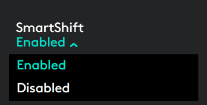
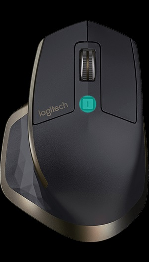
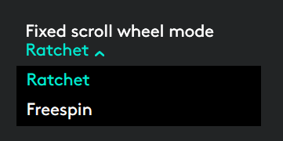

속도 적응 스크롤 휠
SmartShift™가 활성화된 경우, 터치에 대한 반응에 따라 자동으로 속도 적응 스크롤 휠이 두 스크롤 모드 간을 전환합니다.
- 클릭-클릭(래칫) 모드—항목 및 목록의 정밀한 탐색에 적합합니다.
- 초고속(프리스핀) 모드—거의 마찰이 없는 스피닝, 긴 문서와 웹 페이지를 원활히 탐색할 수 있습니다.
스핀하여 전환
|
제동 및 천천히 회전하여
|


SmartShift 활성화
포인트 및 스크롤 탭의 SmartShift 풀다운 메뉴에서 사용를 선택합니다.

SmartShift 풀다운 메뉴에서 사용 안 함를 선택하여 SmartShift를 끕니다.
SmartShift가 비활성화되면 스핀 또는 스크롤 휠 제동이 더 이상 현재 스크롤 모드에 영향을 주지 않습니다.
수동으로 모드 전환
SmartShift가 활성화 또는 비활성화되었는지 여부에 상관없이 모드 전환 버튼을 눌러 수동으로 모드 간을 전환할 수 있습니다.
기본적으로 모드 전환은 마우스 상단의 버튼에 할당되어 있습니다. (마우스 탭에서 현재 버튼 할당을 확인하십시오.)

고정 스크롤 휠 모드 설정
하나의 모드만을 사용하려는 경우, 클릭-클릭(래칫) 또는 초고속(프리스핀) 모드 중에서 스크롤 휠을 고정할 수 있습니다.
포인트 및 스크롤 탭의 고정 스크롤 휠 모드 풀다운 메뉴에서 래칫 또는 프리스핀을 선택합니다.

중요!
SmartShift가 비활성화되고 모드 전환이 MX Master 버튼에 할당되지 않은 경우에만 스크롤 휠 모드를 고정할 수 있습니다.
고정 스크롤 휠 모드를 활성화하려면
- SmartShift 풀다운 메뉴에서 사용 안 함를 선택합니다.
- 마우스 탭에서 강조 표시된 모드 전환 버튼을 클릭하고 모드 전환 이외의 동작을 선택합니다.
자세한 내용은 MX Master 가이드를 참조하십시오.